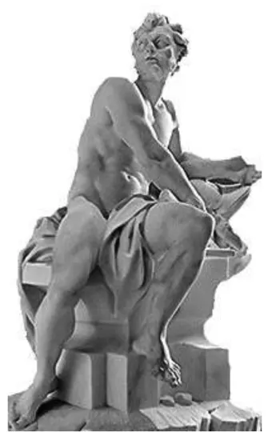

Entity Grimoire
 Hephaestus
Hephaestus
Hephaestus is renowned for healing through Lemnian Earth, a sacred clay from his island that cured snakebite, plague, and wounds. As a shamanic guardian and healer, he also aids those with prosthetics or disabilities.
Origin: Greece
Preferred Vocations
- Blacksmith
- Smith
Domains & Sacred Objects
- Fire
- Forge & anvil
- Volcano
Overview
Hephaestus is the divine smith, Lord of Subterranean Fire. He may be the son of Zeus and Hera or the son of Hera alone. One legend suggests that, following Athena's birth, Hera was so enraged that Zeus had appropriated women's sacred right to give birth that she decided to give birth alone, too. Hephaestus was the result.
The Contradiction
The problem with this myth is that Hephaestus, fully grown and an operational smith, is also the divine midwife who freed Athena from Zeus' head with his moon-shaped axe.
Relationship with Athena
Myths of Athena and Hephaestus are intertwined and contradictory. They are alter egos, two halves of a whole:
- Both were apprenticed to smiths in childhood
- Both their myths touch on traditional gender roles:
- Athena spent her girlhood hammering spears for male warriors
- Hephaestus spent his boyhood crafting women's jewelry
Once upon a time, Athena and Hephaestus were a matched pair; in early legends they were wed. As Athena evolved and increasing emphasis was placed on her literal virginity, their myths became increasingly contradictory. Her past relationship with Hephaestus is among Athena's deep secrets. However, the two continued to share shrines and may still be venerated together (although one may anticipate some fireworks).
The Lameness
Hephaestus is lame and misshapen, not the stereotypical gorgeous "Greek god" like Apollo or Adonis. Various contradictory myths explain this:
Version 1: Zeus or Hera (reports differ) threw him from the Heavens because he was born misshapen.
Version 2: He was crippled when Zeus threw him from Olympus for daring to intervene when Zeus abused Hera.
Life in the Ocean
He landed in the ocean, where he was raised by Thetis and mermaids. They gave him an underwater cave and a child-sized forge, where he began crafting exquisite jewelry and ornaments for them. When Hera and the other goddesses saw his handiwork, Hephaestus was invited to rejoin them in Olympus. He spent most of his time in his smithies in volcanoes and on his sacred island of Lemnos.
Alternative Myth: A little-known myth suggests that Hephaestus never fell from the sky at all. Hera, his mother, fearing that Zeus would harm her son, spirited him away to Lemnos, apprenticing him to her ally, Kedalion the Master Smith. Allegedly the first piece Hephaestus ever crafted was a pair of prosthetic legs for himself.
Powers & Creations
Hephaestus was such an incredible visionary craftsman that his creations could breathe and move:
- He is credited with crafting the first woman (Pandora) in his forge from Earth and water
- He fashioned living golden female robots to help him walk: the first femme-bots
As Shamanic Spirit
Hephaestus is a shamanic spirit presiding over a Mystery tradition. He is a guardian and healer. He is also a stubborn deity with sensitive emotions who will hold a grudge if offended.
Only Dionysus can propitiate him and lighten his mood (via copious quantities of wine).
Worship & Correspondences
Favored People: Smiths, metalworkers, jewelers, potters, ceramicists, shamans, diviners
Manifestations:
- A vigorous, powerful bearded man
- A man whose body is bent and twisted
He moves like a crab, his mother's emblem.
Attributes: Hammer; crescent-moon ax; cane
Consorts: Athena; Aphrodite; Aglaia the Glorious; Charis; Cabeiro and possibly Aetna
Colors: Red, black
Mineral: Lemnian Earth (Lemnia sphragis), clay dug from a cavern in Hephaestia on Lemnos allegedly possessed miraculous healing powers. It was considered an antidote against snakebite and plague.
Animals: Crab, snake
Number: 9
Sacred Sites:
- Lemnos and volcanic islands like Hiera, Imbros, Lipari, and Sicily
- The Hephaesteum in Athens (shared with Athena), the most complete surviving example of Doric temple architecture
Offerings: Greek and Italian wine; smith's tools; seashells; decorate his altar with snakes and the mermaids he adores
Related Entities
Achilles, Adonis, Adrano, Aetna, Aphrodite, Apollo, Athena, Cabeiri, Cabeiro, Dionysus, Erichtonios, Hera, Kedalion, Mermaid, Pandora, Prometheus, Thetis, Zeus
Roman Vulcan
Vulcan is the Roman manifestation of Hephaestus, representing the devouring power of fire which destroys all in its wake and puts enemies to flight, as well as the power of fire that provides warmth and safety. Vulcan can extinguish fires as well as cause and control them. He also has dominion over earthquakes, lightning, volcanoes, cremation and spontaneous combustion.
Vulcan's name is the source for the word volcano: a mountain spewing fire. Volcanoes are named after him, not the other way around. He was the patron deity of Ostia, the ancient harbor city near Rome, where he protected stored grain from fire. As a volatile spirit, his temples were traditionally placed outside city bounds, possibly for safety's sake. Vulcan is celebrated with rituals incorporating bonfires and fireworks.
As Mulciber, Vulcan is the lord of the forge: the fire that softens metal. A fifty-six-foot cast-iron statue of Vulcan standing atop a 124-foot pedestal (180 feet total) overlooks Birmingham, Alabama, and is the world's largest cast-iron statue.
Sacred Days: 23 May and 23 August are the Volcanalia. Vulcan had a Roman temple on the Fields of Mars. His country residence is in the Aeolian Islands, which include Stromboli (home of one of Italy's three currently active volcanoes). Two other islands, Vulcano and Vulcanello, are named in his honor. Vulcan resides beneath the islands.
Role in Hellenic Household Worship

Within the household pattern of offerings, Hephaistos receives daisies and frankincense incense. His tokens are fire, copper and bronze, the hammer, the anvil, and the axe. His color is red, and the donkey, the dog, and the crane stand among His sacred animals.